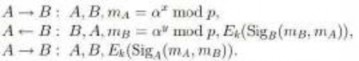

УДК 004.42
В.В. Бондаренко*1, А.В. Чернышова*2
*1 магистрант, Донецкий национальный технический университет,
*2 ст. преподаватель, Донецкий национальный технический университет,
chernyshova.alla@rambler.ru SPIN-код: 3318-2066
Введение
В течение длительного периода времени люди нуждались в засекречивании какой-либо информации. Из-за такой необходимости в защите информации выросла целая наука - криптография. Ранее криптография имела огромную значимость для правительства государств, но с возникновением Интернета алгоритмами информационной безопасности стали интересоваться и другие категории граждан с целью защиты своей информации, коммерческой или персональной [1].
Сегодня пользователи, работающие в интернете, задают вопросы «Насколько надежна их переписка при использовании почтовых сервисов?», «Насколько безопасны социальные сети?», «Можно ли безопасно хранить данные в облачном хранилище?». Работая удаленно, сотрудники компаний нуждаются в средствах защиты передаваемой информации при использовании ресурсов фирмы. Используя электронный документооборот, предприятие, учреждение, коммерческая фирма также использует различные способы защиты передаваемой и хранимой информации на основе существующих классических решений - безопасная аутентификация, использование защищенных протоколов передачи данных, работающих на различных уровнях относительно стека протоколов TCP/IP, применение сервисов защищѐнного хранилища данных. Но тем не менее, при предлагаемых разнообразных решениях по обеспечению сохранности информации, коммерческих и свободно распространяемых продуктов, направленных на защиту передаваемых по сети данных, задачи по повышению эффективности протоколов передачи данных, использующих криптографическую защиту, являются, безусловно, актуальными. Широко используемые протоколы с криптографической защитой имеют ряд достоинств. Но присутствуют и недостатки. Выполнив детальный анализ существующих на текущий момент решений на рынке протоколов с криптографической защитой, можно прийти к выводу о том, что можно изменить в архитектуре или алгоритмах реализации существующих протоколов, чтобы повысить эффективность протокола и адаптировать его, например, к определенному классу приложений, выбрав при этом утвержденные стандарты шифрования.
Анализ современных тенденций в области протоколов передачи данных с криптографической защитой
В последнее время множеству сотрудников пришлось перейти на формат удалѐнной деятельности, и многие наниматели рекомендовали своим работникам задействовать VPN для безопасного доступа к внутрикорпоративным сервисам.
VPN - это набор технологий, которые позволяют создавать логическую структуру на поверхности физической. Он используется для обеспечения безопасности трафика от перехвата преступником и защиты действий в сети интернет обычных пользователей.
VPN необходим для организации удаленной работы. Работая из дома, используя VPN-сервис, есть возможность получить онлайн-доступ к документации и сервисам фирмы или организации, при этом соединение будет гораздо защищѐнным, данные будет нелегко перехватить и расшифровать.
VPN также необходим для объединения разных офисов одной и той же компании. Офисы могут быть отдалены друг от друга на большое расстояние.
При подключении к Wi-Fi в кафе, на станциях метро и т.д., чтобы злоумышленники не могли украсть личные данные пользователя, также можно воспользоваться сервисом VPN. При использовании общедоступной сети использование VPN-сервиса делает работу с веб-сайтами относительно безопасной.
Использование социальных сетей в публичных зонах Wi-fi без сервиса VPN может привести не только к перехвату конфиденциальной информации, но и в дальнейшем есть угроза использования данных аккаунтов в своих целях, пройдя процедуру аутентификации от имени пользователя. Утеря информации для доступа к почтовым сервисам, при незащищенной аутентификации на почтовых серверах, приведет к еще более серьѐзным последствиям, так как к почтовым аккаунтам могут быть привязаны другие аккаунты web- приложений, в том числе и сервисов, используемых на предприятиях, в учреждениях, на фирмах, а также профили социальных сетей и другие почтовые аккаунты. Тогда все приложения, связанные с этим почтовым ящиком, могут быть атакованы. Но самым неприятным может быть утечка данных банковских карт, если пользователь решил оформить перевод денег кому-нибудь, подключившись к общедоступному Wi-Fi.
VPN может использоваться также для обеспечения анонимности пользователя при работе в сети Интернет. При использовании VPN затруднительно определить, какие сайты посещает пользователь, каким браузером пользуется, где находится территориально и т.д. Необходимость скрыть своѐ местоположение может потребоваться в путешествиях при использовании различных интернет-приложений.
Рассмотрим принцип работы VPN.
VPN–соединение - это можно сказать «туннель» между пользователем и сервером. Каждый узел кодирует данные перед тем, как они попадут в «туннель».
Подключившись к VPN, система идентифицирует сеть и начинает распознавание (сопоставляет введенный пароль с паролем в своей базы данных).
Далее сервер авторизует пользователя, то есть обеспечивает право на осуществление поставленных действий: чтение интернет-почты, серфинг в Интернете и т.д. После формирования соединения весь трафик передается между компьютером пользователя и сервером в зашифрованном виде. Компьютер пользователя располагает IP-адресом, выданным интернет-провайдером. VPN-сервер изменяет IP-адрес компьютера пользователя на свой собственный. И уже с VPN-сервера вся информация передаѐтся на внешние ресурсы, запрашиваемые пользователем. Теперь можно получить доступ к ресурсам относительно надежным способом.
Рисунок 1 – Как работает VPN
Тем не менее, следует учитывать, что не вся информация зашифрована. Разные провайдеры VPN могут иметь разные характеристики, к примеру степень шифрования, хранение логов (журнал, в котором хранится информация о посещенных сайтах, сокрытие факта подключения к серверу, реальный IP-адрес и т.д.) и сотрудничество в выдаче информации третьим лицам.
Если VPN-провайдер вообще не записывает логи, то передавать третьим лицам просто нечего. А сокрытие факта подключения к серверу - это уже редкая услуга. Если соединение установлено неправильно или соединение внезапно отключено, с частью данных может произойти утечка. Технология Multihop VPN поможет решить проблему, которая предполагает подключение к сайту сразу через несколько серверов.
Рассмотрим популярные протоколы VPN.
PPTP – Point-to-Point Tunneling Protocol [2], использует два соединения – одно для управления, другое – для инкапсуляции данных, поддерживается всеми операционными системами, не требует много вычислительных мощностей, но обладает плохой защищенностью. Используемые методы шифрования этого протокола устарели, есть ошибки в реализации протокола от Microsoft. Нет шифрования по умолчанию, на взлом требуется менее суток. Протокол считается менее защищенным, чем IPSec. Используется, когда защита данных не очень важна или когда нет других вариантов.
PPTP анализировали с точки зрения безопасности. В протоколе были обнаружены уязвимости, связанные с используемым протоколом аутентификации PPP, протоколом MPPE и интеграции между аутентификациями MPPE и PPP для установки сессионного ключа. Уязвимости PPTP:
MSCHAP-v1 ненадѐжен;
MSCHAP-v2 уязвим для словарной атаки;
при использовании MSCHAP-v1, MPPE использует одинаковый RC4 сессионный ключ для шифрования информационного потока в обоих направлениях;
MPPE использует RC4 поток для шифрования. Отсутствует метод для аутентификации цифрового потока и поэтому этот поток уязвим для атаки, делающей фальсификацию битов. [3]
L2TP – Layer 2 Tunneling Protocol - Протокол L2TP расширяет модель PPP, позволяя размещение терминальных точек L2 и PPP в различных физических устройствах, подключенных к сети с коммутацией пакетов [4]. Рассматриваемый протокол более эффективен для построения виртуальных сетей, но более требователен к вычислительным ресурсам, стандартно не включает шифрование. Он работает вместе с другими протоколами, чаще всего с IPSec. Используется интернет-провайдерами и пользователями в корпоративных целях.
IPSec – Internet Protocol Security [5] - ряд протоколов и стандартов для безопасных подключений. Достоинствами IPSec являются хорошая архитектура и надежность алгоритмов. Недостатками IPSec являются сложность в настройке, из чего следует понижение защищѐнности при неверной настройке; для этого требуется большое количество вычислительных возможностей, но данный недостаток компенсируется аппаратным ускорением алгоритма шифрования AES. Он часто используется в совмещении с другими методами.
SSL – Secure Sockets Layer & TLS – Безопасность транспортного уровня - это группа методов, которая включает протоколы TLS, SSL и другие средства защиты. Преимущество протокола заключается в том, что он свободно передается большинством общедоступных сетей. Недостатком протокола является довольно низкая производительность, сложность в настройке и необходимость установки дополнительного программного обеспечения. Протокол SSL используется на веб-сайтах, URL-адреса которых начинаются с https.
Некоторые реализации VPN: OpenVPN [6], Microsoft SSTP [7]. OpenVPN имеет открытый исходный код, реализован практически для каждой платформы и является достаточно безопасным. Он выполняет функцию безопасного туннеля для трансляции информации через один TCP/UDP порт. Главное преимущество OpenVPN состоит в легкости инсталляции и настройки, что является редким случаем для таких инструментов. OpenVPN соединяет клиент/серверную архитектуру. Он должен быть поставлен на все узлы VPN сети, там, где один узел должен быть сервером, а другие - клиентами. VPN шлюзы объединяют один и тот же ключ для дешифрования и шифрования информации при размещении статических ключей. В этом случае изменение настройки будет простым, но при этом появится затруднѐнность передачи и безопасности ключа. Если кто-то завладеет этим ключом - он сможет декодировать данные.
Для того чтобы это избежать, следует применить инфраструктуру открытых ключей (PKI). При этом каждый узел управляет двумя ключами: закрытый ключ доступный только его хозяину и открытый ключ, известный всем. Данную подсистему использует OpenSSL, соединѐнный в OpenVPN, для аутентификации VPN узлов до того, как начать передачу закодированных данных.
Microsoft SSTP – протокол туннелирования защищенных сокетов SCTP по определению является протоколом прикладного уровня. Он предназначен для синхронного обмена данными между двумя программами и позволяет использовать несколько конечных точек приложения через одно сетевое соединение между одноранговыми узлами. Это позволяет эффективно использовать коммуникационные ресурсы, доступные в сети.
Протокол SSTP основан на SSL вместо PPTP или IPSec и использует TCP-порт 443 (или другие, как реализовано в Ideco UTM) для ретрансляции трафика SSTP. Хотя он тесно связан с SSL, прямое сравнение между SSL и SMTP невозможно, поскольку, в отличие от SSL, SSTP - это просто протокол туннелирования. Есть много причин выбрать SSL, а не IPSec в качестве основы для SSTP. IPSec нацелен на поддержку VPN- соединения, поэтому SSL стал лучшей основой для разработки STP, поскольку он поддерживает роуминг.
Более подробно о существующих протоколах передачи данных с криптографической защитой можно ознакомиться в статье [8].
Выявление недостатков и уязвимостей существующих алгоритмов защиты в сетях передачи данных
Защищенные свойства протоколов могут быть объявлены, когда они объявлены самими авторами протокола (и, как правило, влекут всевозможные доводы в полезность осуществления этих функций), и подразумевается, когда авторы какой-либо структуры рассчитывают на разработку защищенных свойств каким-либо протоколом.
Атака на защищенный протокол - это попытка проанализировать протокольные сообщения и/или выполнить действия, не предусмотренные протоколом, с целью разрушения предъявленных или обусловливаемых свойств протокола.
Атака считается удачной, если нарушено хотя бы одно из предъявленных или подразумеваемых свойств протокола.
В случае удачной атаки на обуславливаемые свойства мы уточним, что это успешная атака на применение протокола в какой-либо подсистеме. Это будет объяснять, конечно, не о недостатках самого протокола, а о неправильном выборе протокола (настроек) составителями системы.
Есть огромное число атак на протоколы. Многие атаки имеют общие критерии, что даѐт возможность использовать классы атак для облегчения мониторинга и разработки протоколов, более устойчивых к большому количеству классов атак.
MitM «Атака посередине» [9] (man-in-the-middle attack). Класс атак, при которых преступник повторяет и подменяет текст сообщений, проходящих между двумя или более пользователями протокола, а пользователи не догадываются о том, что переписка «прослушивается» считая, что они общаются лично друг с другом без участия третьего лица. Протоколы, которые не осуществляют обоюдную аутентификацию сторон, беззащитны для этой атаки (цель G1). Традиционный пример атаки такого класса – атака на протокол Диффи—Хеллмана.
Повторная атака с повторной передачей [9]. Класс атак, при которых преступник фиксирует все письма, проходящие в одном сеансе протокола, а затем дублирует их в новом, под видом одного из участников первого сеанса. Наглядными примерами протоколов, к которым применима эта атака, являются протоколы Wu-Lan и протокол Shamir keyless protocol.
Атака подмены типа TF [9]. Класс атак, при которых злоумышленник, используя сообщение, переданное в сеансе локального протокола, создает уникальное, передавая его на другом раунде протокола под образом сообщения другого типа (с другой целью). Например, протоколы Wide-Mouth Frog, Denning— Sako, Yahalom и Otway—Riis уязвимы для таких атак.
PS Атака параллельного сеанса [10] - это атака, при которой преступник инициирует некоторое количество параллельных сеансов протокола, чтобы использовать сообщения из одного сеанса в другом. Наглядным примером протокола, восприимчивого для этого класса атак, считается симметричный вариант Нидхэма—Шредера.
Атака STS с известным одноразовым ключом [10] – это атака на протокол повторной передачи, организованная на знании одноразового секретного ключа.
Атака KN с использованием известного сеансового ключа. [10]
Классы атак, при которых злоумышленник получает доступ к временным секретным ключам, используемым в протоколах (например, к актуальным сеансовым ключам), после чего он может гарантировать, например, аутентификацию или, по крайней мере, установление сеанса от имени одной из сторон протокола.
Атака UKS с неизвестным сеансовым ключом [10] – это атака, состоящая в попытке получить информацию о долгосрочном ключе или любую другую ключевую информацию, которая позволяет создавать вновь сеансовые ключи для других сеансов протокола.
Класс атак на протоколы аутентификации ключей, при которых злоумышленник получает возможность доказать одной из сторон факт владение ключом (например, путем повторения сообщения из законного сеанса), хотя сам ключ ему был не известен. Например, симметричный протокол Нидхэма- Шредера уязвим для этого класса атак.
Следует подчеркнуть, что, если не указано иное, при анализе криптографического протокола (не конкретных систем) используется предположение о долговечности всех используемых криптографических примитивов. Например, предполагается, что, хотя и существует безопасный обмен информацией с использованием сессионного ключа, разработанного в сеансе некоторого криптографического протокола, у злоумышленника не будет достаточно ресурсов и времени для получения этого сессионного ключа путем атаки на используемые шифры или криптографически стабильные хэш-функции.
С другой стороны, следует предположить, что сеансовые ключи, полученные в рамках сеансов протокола, будут получены преступником через некоторое время (однако, намного дольше, чем время самого сеанса связи) (классы атак STS и KN). И по прошествии гораздо более длительного времени преступник сможет получить доступ к «мастер-ключам» — ключам долгосрочного использования, так что следует разработать протоколы с генерацией сеансовых ключей, в том числе со свойством G9/PFS.
Поиск возможных способов устранения найденных недостатков в алгоритмах протоколов передачи данных (прикладной уровень)
Одним из первых алгоритмом назначения открытого ключа был предложен Хеллманом М. Э. и Диффи У. в 1976 году. [11] Для его реализации участники должны договориться о большом значении простого числа p и обуславливаемого компонента α мультипликативной группы Z ∗ p = = {1, 2, . . . , p − 1}. Чтобы сгенерировать общий ключ k, они должны сформировать некоторые числа x, 1 ≤ x ≤ p − 2 и y, 1 ≤ y 6
≤ − 2 соответственно. После этого они могут начать общение посредством сообщении. Протокол DH:
Рисунок 2 – Пример обмена сообщениями
Искомый общий ключ теперь вычисляется по формуле
Рисунок 3 – Искомого общего ключа Слабость: отсутствие аутентификации сторон.
Протокол MTI. Интересный подход к защите протокола DH от атаки «противник в середине» был предложен Т. Мацумото, И. Такашима и Х. Имаи (Matsumoto T., Takashima Y., Imai H.) в 1986 г. Они предложили серию протоколов, предполагающих наличие у абонентов открытых ключей и использующих различные модификации процедуры выработки общего ключа.
Рассмотрим протокол MTI/A0. Предположим, что участники A и B имеют секретные ключи a, 1 ≤ a
≤ p − 2, и b, 1 ≤ b ≤ p − 2, соответственно и публикуют свои открытые ключи βA = α a mod p и βB = α b mod
p. Для выработки общего секретного ключа k они должны сгенерировать случайные числа x, 1 ≤ x ≤ p−2, и y,
1 ≤ y ≤ p−2, соответственно, а затем обменяться следующими сообщениями:
Рисунок 4 – Пример обмена сообщениями
Теперь участники A и B вычисляют общий ключ k = α^(xb+ya) mod p по формулам.
Рисунок 5 – Вычисление общего ключа
Любая подмена сообщений приводит к тому, что все стороны получают различные значения ключа, в результате чего становится невозможным чтение всей передаваемой информации. Тем самым свойство аутентификации ключа протокола при атаке «противник в середине» не нарушено. Вместе с тем этот протокол не обеспечивает аутентификации сторон и подтверждения правильности получения ключа.
Протокол STS. Попытка построения аутентифцированного протокола на базе DH была предпринята в протоколе STS (station-to-station), созданном У. Диффи (W. Diffie), П. Ван Ооршотом (P. Van Oorschot) и
M. Вейнером (M. Wiener) в 1992 г.

Рисунок 6 – Пример обмена сообщениями
Здесь SigA и SigB — цифровые подписи пользователей A и B соответственно, k = α xy mod p — искомый общий ключ.
Вставка во второе и третье сообщения протокола значений цифровых подписей позволяет гарантировать достоверность получения сообщения именно от того пользователя, от которого это сообщение получено.
Шифрование значений подписей пользователей с помощью симметричного алгоритма E введено для того, чтобы обеспечить взаимное подтверждение правильности вычисления значения ключа, так как при неверно вычисленном ключе невозможно получить верные значения цифровых подписей.
Модифицированный протокол STS. В 2004 г. K. Бойд и А. Матура предложили следующую модификацию протокола STS:
Рисунок 7 – Пример обмена сообщениями по протоколу STS
где k0 = f(k) — ключевой параметр хеш-функции, вычисляемый как значение некоторой функции от результирующего сеансового ключа k = α xy mod p.
Атака: для данной версии протокола можно применить двустороннюю атаку с неизвестным общим ключом (bilateral unknown key-share attack, BUKS attack):
Рисунок 8 – Алгоритм атаки
Нарушитель C, используя свой законный обмен с участником B, может применить против участника A атаку, в результате которой он может убедить A в том, что он выступает от имени B. Нарушитель C использует свой законный обмен с участником B и убеждает A в том, что он выступает от имени B. Сеанс с участником B остается незавершенным, так как C, не зная секретного ключа участника A, не сможет подобрать правильный ответ для B. Поэтому любое его сообщение на третьем шаге будет участником B отвергнуто.
Данная атака не представляет реальной опасности, так как при этом нарушитель не будет знать секретного ключа k = α xy mod p и поэтому не сможет читать передаваемые сообщения, передаваемые от A к B. Однако в результате участник A не будет ничего подозревать и примет участника C за B.
Для повышения защищенности можно расширить протокол за счет использования двухфакторной аутентификации при вводе пароля пользователя и при вводе ключа разблокировки личности, например, через отправку кода подтверждения на e-mail адрес. А также за счет введения в реализацию клиента правил, не позволяющих генерировать простой пароль. При этом e-mail адреса для аутентификации на ресурсе могут храниться на сервере ресурса и задаваться при регистрации на конкретном ресурсе. А e-mail, используемый для разблокировки личности, может храниться в зашифрованном виде вместе с кодом разблокировки, чтобы исключить возможность подмены e-mail адреса на адрес злоумышленника. В таком случае e-mail, необходимый для активации кода разблокировки личности, может задаваться при первом запуске приложения. Оба типа e-mail адресов могут быть изменены при активации кода разблокировки личности. [12]
Также можно генерировать QR-код, хеш которого будет зашифрован и передаваться пользователю, у которого на другом устройстве будет ключ для расшифровки картинки, а из этой картинки будет формироваться ключ для шифрования информации между двумя пользователями. [13]
Формирование требований к протоколу передачи данных с криптографической защитой
Существует достаточно большое количество различных типов атак, которые зависят от конкретной реализации протокола.
Например, для криптографического протокола, основанного на системах симметричного шифрования, можно использовать особенности самих систем шифрования и, в частности, реализованные методы и режимы шифрования, синхронизации и т.д.
Для защиты от таких атак необходимо проанализировать архитектуру протокола и структуру передаваемых сообщений для выявления возможных уязвимостей, которые позволяют навязывать сообщения с известными или идентичными значениями определенных полей, или путем подмены типа различных полей. Для криптографических протоколов, организованных на основании систем асимметричного шифрования, недостатком является замена открытого ключа одного из партнѐров другим открытым ключом, при этом секретная половина этого ключа известна противнику. В частности, это позволяет противнику узнать содержание зашифрованных сообщений, отправленных этому участнику. В этом случае свойство связности открытого ключа и идентификатора участника нарушается. Поэтому атака такого типа называется атакой привязки. Для защиты от таких атак их сертификаты используются вместо открытых ключей, совершая индивидуальный механизм (PKI) для выдачи, отзыва и проверки их корректности.
Выполнив анализ средств защиты в существующих протоколах с криптографической защитой, обнаружив достоинства и недостатки рассмотренных протоколов и их уязвимость к атакам определенного типа, можно сформировать некоторые общие требования к протоколам передачи данных с криптографической защитой, работающих на прикладном уровне:
использование безопасной аутентификации пользователей на основе двухфакторной аутентификации с использованием криптографических алгоритмов;
использование симметричных криптографических алгоритмов с большим размером ключа для каждой сессии взаимодействия клиента и сервера, клиента и клиента (при непосредственном взаимодействии двух клиентов без участия сервера, если протокол предусматривает такое взаимодействие);
использование разовых ключей симметричного алгоритма для шифрования сессий между участниками обмена;
использование алгоритмов с открытым ключом для защиты ключа симметричного алгоритма шифрования;
генерация разных пар ключей ассиметричного алгоритма шифрования для участников взаимодействия, при этом ключи должны быть не минимального размера;
обеспечение контроля целостности передаваемых данных с помощью электронно-цифровой подписи;
использование дополнительных средств защиты, обеспечивающих более надежный обмен ключами (токены, QR-коды);
возможность использования «арбитра» при генерации ключей для проверки целостности данных;
возможность использования разрабатываемого протокола с криптографической защитой поверх работы стандартных протоколов обмена информацией и использование такого протокола в клиент- серверных приложениях.
Описав общие требования к протоколу, в дальнейшем можно переходить к разработке архитектуры протокола прикладного уровня с криптографической защитой. При этом при проектировании архитектуры протокола следует предусмотреть возможность повышения эффективности защиты передаваемой информации, как на этапе аутентификации, так и на этапе передачи данных, а также предусмотреть контроль целостности передаваемых защищенных данных.
Выводы
В статье приведен анализ современных тенденций в области протоколов передачи данных с криптографической защитой. Рассмотрена технология VPN – как один из вариантов безопасной передачи данных в сети с использованием криптографической защиты, описаны еѐ популярные протоколы, выделены достоинства и недостатки популярных протоколов. Более подробный обзор протоколов представлен в статье [8].
Также был проведен анализ протоколов с точки зрения их уязвимости к атакам определѐнного типа.
Описан поиск возможных способов устранения найденных недостатков в алгоритмах протоколов передачи данных на прикладном уровне.
В статье представлены возможные требования к авторскому протоколу передачи данных с криптографической защитой.
В дальнейшем при проектировании архитектуры протокола с криптографической защитой будут проработаны возможные варианты повышения эффективности протокола передачи данных с криптографической защитой для приложений определенного класса таким образом, чтобы исключить возможность проведения атак некоторых типов. Основным требованием для такого протокола будет надежность.
Литература
Дошина, А. Д. Криптография. Основные методы и проблемы. Современные тенденции криптографии / А. Д. Дошина, А. Е. Михайлова, В. В. Карлова. — Текст : непосредственный // Современные тенденции технических наук : материалы IV Междунар. науч. конф. (г. Казань, октябрь 2015 г.). — Казань : Бук, 2015. — С. 10-13. — URL: https://moluch.ru/conf/tech/archive/163/8782/ (дата обращения: 23.10.2022).
RFC 2637 Point-to-Point Tunneling Protocol (PPTP)| Энциклопедия сетевых протоколов
[Электронный ресурс] — Режим доступа:https://www.protokols.ru/WP/rfc2637/ - Загл. с экрана.
Bruce Schneier. Cryptanalysis of Microsoft’s Point-to-Point Tunneling Protocol (PPTP) [Электронный ресурс] — Режим доступа: https://docviewer.yandex.ru/?tm=1666977162&tld=ru&lang=en&name=paper- pptp.pdf&text=Bruce+Schneier%2C+Cryptanalysis+of+Microsoft%27s+Point+to+Point+Tunneling+Protocol+%28 PPTP%29&url=https%3A//www.schneier.com/wp-content/uploads/2016/02/paper-pptp.pdf&lr=142&mime=pdf&l 10n=ru&sign=d91206e1f3ea382ccc3e21ecf004ef00&keyno=0 - Загл. с экрана.
Семѐнов Ю.А. Протокол туннелей на сетевом уровне L2 (L2TP) [Электронный ресурс] — Режим доступа: http://book.itep.ru/4/44/l2pr.htm - Загл. с экрана.
Internet Protocol Security [Электронный ресурс] — Режим доступа: https://ru.on1.click/tiki- index.php?page=info_Internet_Protocol_Security - Загл. с экрана.
OpenVPN. Что такое OpenVPN [Электронный ресурс] — Режим доступа: https://openmaniak.com/ru/openvpn.php - Загл. с экрана.
Обзор Secure Socket Tunneling Protocol [Электронный ресурс] — Режим доступа: https://vc.ru/dev/119780-obzor-secure-socket-tunneling-protocol - Загл. с экрана.
Бондаренко, В. В. Обзор протоколов передачи данных, использующих криптографическую защиту / В. В. Бондаренко, А. В. Чернышова // Современные информационные технологии в образовании и научных исследованиях (СИТОНИ-2021) : Материалы VII Международной научно-технической конференции, Донецк, 23 ноября 2021 года / Под общей редакцией В.Н. Павлыша. – Донецк: Донецкий национальный технический университет, 2021. – С. 282-288. – EDN ILKYYL.
Clark J., Jacob J. A Survey of Authentication Protocol Literature: Version 1.0. 17 Nov. 1997
[Электронный ресурс] — Режим доступа: http://www.cs.york.ac.uk/ jac/papers/drareview.ps.gz - Загл. с экрана.
Криптографические протоколы – Основные определения [Электронный ресурс] — Режим доступа: https://cryptoprotocols.ucoz.com/index/main_definitions/0-2#- Загл. с экрана.
Черѐмушкин А. В. Криптографические протоколы: основные свойства и уязвимости // Прикладная дискретная математика. — 2009. — нояб. — вып. 2. — с. 115—150. — URL: cyberleninka.ru/article/n/kriptograficheskie-protokoly-osnovnye-svoystva-i-uyazvimosti.pdf.
Грищенко, О. С. Анализ алгоритмов аутентификации в распределенных программных системах / О. С. Грищенко, А. В. Чернышова // Программная инженерия: методы и технологии разработки информационно-вычислительных систем (ПИИВС-2018) : Сборник научных трудов II Международной научно-практической конференции, Донецк, 14–15 ноября 2018 года. Том 1. – Донецк: Донецкий национальный технический университет, 2018. – С. 102-108. – EDN XBCKSN.
Грищенко, О. С. Защита информации в приложениях для мгновенной передачи сообщений / О. С. Грищенко, А. В. Чернышова // Информатика, управляющие системы, математическое и компьютерное моделирование (ИУСМКМ-2017) : Сборник материалов VIII Международной научно-технической конференции в рамках III Международного Научного форума Донецкой Народной Республики, Донецк, 25 мая 2017 года / Редколлегия: Ю.К. Орлов [и др.]. – Донецк: Донецкий национальный технический университет, 2017. – С. 115-119. – EDN KKRGJS.
Bondarenko V.V., Chernyshova A.V. Improving the efficiency of data transmission protocols using cryptographic protection. The article is devoted to an urgent problem — modern trends in the field of data transmission protocols with cryptographic protection. The article identifies the advantages and disadvantages of modern data transmission protocols with cryptographic protection, searches for ways to eliminate them when designing an author's data transmission protocol with cryptographic protection for applications of a certain class. The requirements for the data transfer protocol with cryptographic protection have been formed.